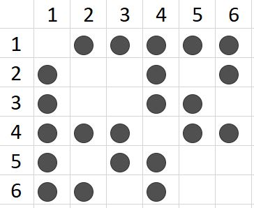
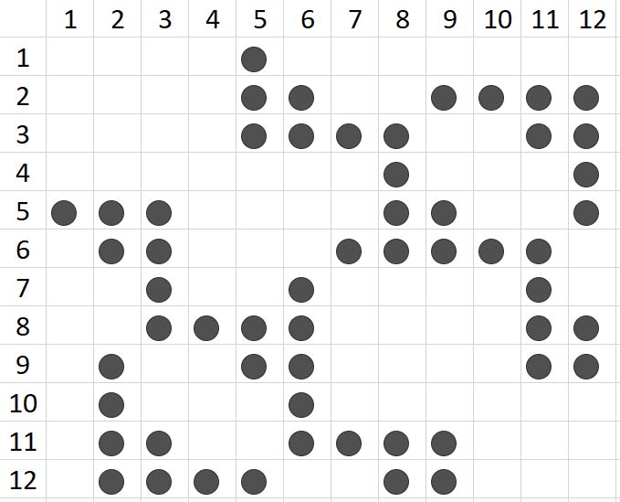

2. Configuration¶
-
class
src.config.Lane(utmzone, utmletter, easting, northing, distances, lane_length, is_straight)¶ -
distances¶ Alias for field number 4
-
easting¶ Alias for field number 2
-
is_straight¶ Alias for field number 6
-
lane_length¶ Alias for field number 5
-
northing¶ Alias for field number 3
-
utmletter¶ Alias for field number 1
-
utmzone¶ Alias for field number 0
-
-
src.config.load_optimization_zone_constraints(inter_name)¶ TODO
-
src.config.read_and_process_gps(inter_name)¶ TODO: add scipy.linregress to test whether GPS points form straight line, to set is_straight
-
src.config.load_inter_params(inter_name)¶ Returns: - inter_name: intersection name
- max_speed: maximum speed in \(m/s\)
- min_headway: the lowest headway at the stop bar in \(s\) (corresponds to the highest flow)
- det_range: detection range in \(m\)
- k, m: refer to
LeadConnectedfor the definitions - num_lanes: total number of incoming lanes
- phase_cover_set: a subset of mutually exclusive phases that cover all lanes for use in
_set_non_base_scheduled_departures - small_positive_num: small number that lower than that is approximated by zero
- large_positive_num: large number: is a large number to initialize badness of alternatives in GA. Make sure cannot be beaten by worst alternative.
- lli: a dictionary of sets. The key is the phase number and is zero-based. The value to a key is a set of lanes included in that phase (lanes are also zero-based)
- pli: a dictionary of sets where the keys are lane numbers and must be zero-based. The value for each key is a set of lane numbers that are in conflict with the key lane (again, must be zero-based).
- allowable_phases: subset of all possible phases to be used. These are different than the phase_cover_set
- yellow
- allred
- min_green
- max_green
- lag_on_green: The lag time from start of green when a vehicle can depart to allow vehicle cross after green (in seconds).
- max_num_traj_points: check if it’s enough to preallocate the trajectory
- min_dist_to_stop_bar: lower than this (in m) do not update schedule
- do_traj_computation:
- trj_time_resolution: time difference between two consecutive trajectory points in seconds used in
discretize_time_interval()(be careful not to exceed max size of trajectory) - log_csv: if set True, makes CSV files of the outputs
- print_commandline:
Note
- The distance to stop bar will be input from either CSV file or fusion. However, the number provided here is used for generic computations.
- odd degree of polynomial is recommended: k to be even and at least 5
- Make sure the
max_num_traj_pointsto preallocate the trajectories is enough for a given problem
An intersection configuration can be specified by its lanes and movements (left, through, right) that are allowed in each lane. The lane-lane incidence matrix of an intersection is a squared matrix that holds 1 (shown by solid circles in the figures), if two lanes are in conflict. The standard types of conflicts that may want to be avoided are cross, merge, and diverge conflicts.
Depending on the design, the definition of conflicts points can be broader or more limited. For instance, if volume of a lane is too low and extensive gaps can be found, some of conflict points can be considered as non-conflicting points. In the following figures, only cross and merge conflict points are indicated.
The TERL facility.
The reservation-based intersection.
Warning
All the parameters defined here are required for running the program.
Authors: Mahmoud Pourmehrab <pourmehrab@gmail.com> Ash Omidvar <aschkan@ufl.edu> Date: April-2018 Dec-2018
{kind=link}
{kind=link}
{kind=link}
-
src.config.get_pretimed_parameters(inter_name)¶ This returns the parameters needed for pre-timed control.
Note
- The sequence field includes the phases and is zero-based.
- You need to compute green splits, yellows, and all-reds based on traffic flow theory.
Warning
Must choose
num_cyclesat least 2.
-
src.config.get_sig_ctrl_interface_params(inter_name)¶ Returns: - Proper phases to be called
Note
- Account for SNMP lag time. Depending on the processor capability: [0.1 s - 0.9 s]
Author: Ash Omidvar <aschkan@ufl.edu> Date: May-2018